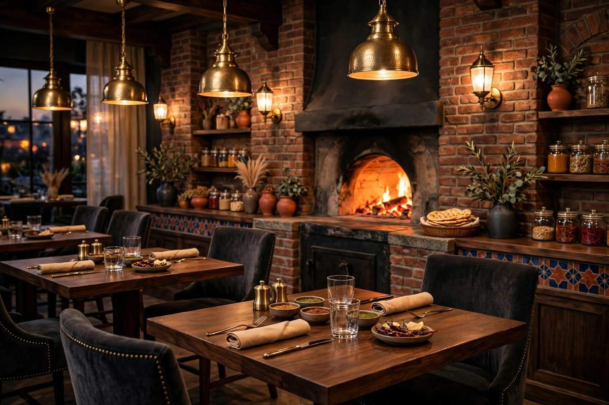

Our story
A small kitchen with one rule: print the prices
Saffron House began, in this fictional telling, as a six-table grill on Main Boulevard where the owner wrote the day's prices on a board by the door. The room has grown — a family hall, a quiet corner for working dinners — but the rule has not changed: the menu on this website is the menu at the table, prices included.
Everything is cooked to order over charcoal or in the wok: kebabs hand-minced each morning, karahis finished in desi ghee, naan rolled when you sit down. Nothing waits under a lamp.

Find us
14-B Main Boulevard, Gulberg III, Lahore
Two minutes from Liberty Market. Parking on Main Boulevard; valet on Friday–Sunday evenings.
Call: 0300 123 4567
WhatsApp orders: order page
Opening hours
Open every day
- Monday – Thursday12:00 pm – 12:00 am
- Friday12:00 pm – 1:00 am
- Saturday12:00 pm – 1:00 am
- Sunday12:00 pm – 12:00 am
Last seating 30 minutes before close. Kitchen closes for orders 45 minutes before close.
Google reviews
Rated 4.8 out of 5
From 214 Google reviews. The reviews below are demo reviews written for this portfolio sample — a live site would show the restaurant's real Google reviews here.